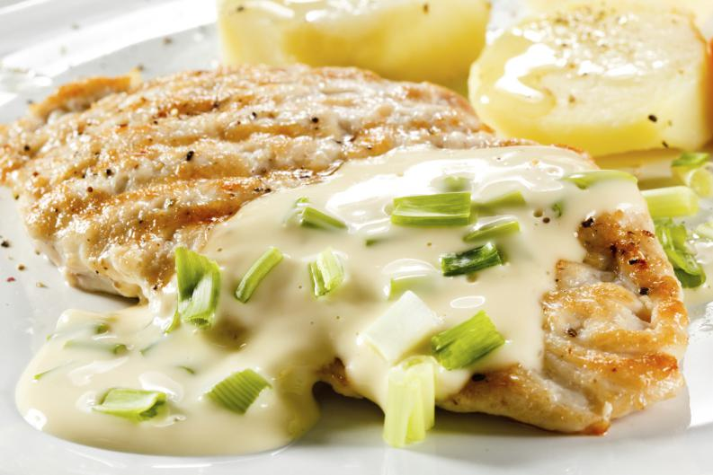

Cocinando:
El blog de los amantes de la gastronomíaPavo al horno
18 de mayo 2018
El secreto de esta receta para preparar pavo asado al horno es la mezcla de mantequilla con limón, tomillo (o las hierbas que usted prefiera), y ajo que usa para untar el pavo, y el luego se hornea el pavo a fuego lento. Hoy se celebra el día de Acción de Gracias o Thanksgiving en Estados Unidos, de todos los días feriados que hay aquí este es el más concentrado en mi tema favorito: la comida. El pavo asado es el plato principal para este día, hay muchos acompañantes tradicionales para el pavo, pero estos siempre varían de un hogar a otro. Leer mas...
Esta receta es muy buena, la probaré con mi familia :D
Está delicioso, voy a recomendar este blog con todos mis conocidos, fu&eeacute; una muy buena receta, ojalá publiquen más como esta.
Estuvo muy buena, pero deberían hacer recetas japonesas.
Supremas de pollo a la suiza
17 de mayo 2018 Hay muchas variantes para hacer supremas de pollo, y algunas de ellas pueden ser rellenas de espinaca, jamón y queso, o bien, cubiertas de diversas salsas. Por tal motivo, cada una tiene un sabor diferente y puede gustarle o no a los comensales. Por ello, si no deseas estar en la duda de si la receta que prepares para el evento pueda llegar a apetecer, a continuación vas a poder aprender a realizar unas exquisitas supremas de pollo a la suiza, bañadas en salsa bechamel y gratinadas con queso parmesano. Leer mas...
Está increible, nunca había probado un pollo como este.
Este blog no deja de sorprenderme con las mejores recetas
Wow, estuvo delicioso y muy sencillo de preparar.